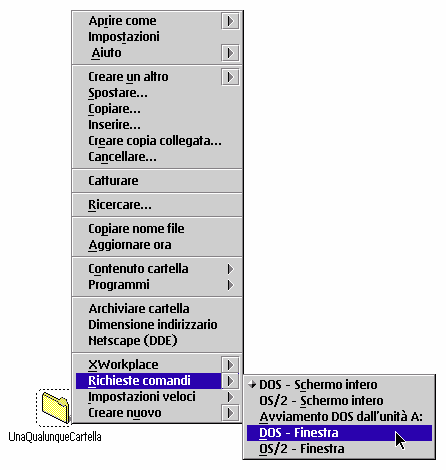
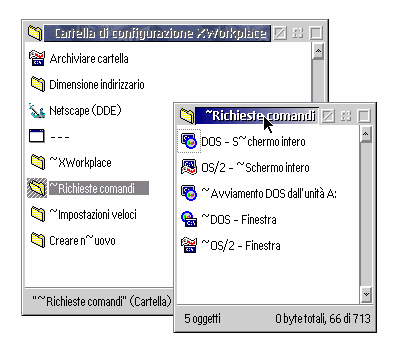

Questo ä possibile grazie ad una Cartella di configurazione separata, che ha l'aspetto di una normale cartella di WPS. Lo script di installazione posiziona questa cartella nella cartella "&xwp;" sulla Scrivania, ma ä possibile spostarla ovunque si voglia.
Qualsiasi cosa venga posta in questa cartella di configurazione appare immediatamente nei menu contestuali di tutte le cartelle presenti sul sistema.
Esemplifichiamo, dando un'occhiata alla configurazione iniziale:

La cartella di configurazione preimpostata ä simile a questa:

Come si vede, le cartelle e gli oggetti programma nella Cartella di configurazione di XFolder corrispondono agli elementi nel menu contestuale. Aggiungendo qualcosa alla Cartella di configurazione o rimuovendone oggetti, i menu contestuali verranno immediatamente modificati.
In ogni caso le azioni eseguite da XFolder alla selezione di una voce di menu contestuale dipendono dal tipo di oggetto corrispondente alla voce di menu. Per dettagli sul funzionamento, si vada nella cartelle di installazione di &xwp; e si selezioni "Aiuto" per la Cartella di configurazione che si trova lç.
Pur nella sua semplicitÖ l'approccio combinato cartella/oggetto della cartella di configurazione di XFolder ä molto potente. ‘ possibile aggiungere i propri programmi preferiti, le maschere ed i file dati che si desidera siano raggiungibili comodamente da qualsiasi cartella.
Se si conosce il REXX le possibilitÖ sono anche pió ampie: ä possibile scrivere propri script che
manipolano la WPS, creano oggetti programma e li pongono nella cartella di configurazione.
Nella pagina
"Domande Poste Frequentemente",
ä possibile trovare altre informazioni.